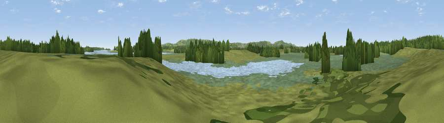

Viewpoint near Arne
#38183 in England · top 79% of its area beats it · near ArneThe view, rendered

A 360° render of this exact spot computed from the terrain model, tree cover and land cover — summer colours, afternoon light, calibrated against photographs of famous viewpoints. Real trees, hedges and buildings will differ in detail.
The panorama
Grey silhouette: terrain skyline in each direction (720 bearings, Earth curvature and refraction included). Dashed green: skyline with trees (+15 m) and buildings (+8 m) as obstacles. Blue strip: how far the ground is visible on each bearing.
Where the view opens
Wedge length = distance to the farthest visible ground on that bearing (vegetation-aware). Rings at 10, 25 and 50 km.
What fills the view
33% wetland · 30% grassland · 21% woodland · 16% water ·
Angular shares of the visible panorama (visual magnitude), not map area. Landscape diversity 0.60 (0–1 Shannon).
Key numbers
More beautiful places nearby
The staircase of upgrades: each row has a higher view potential than everything closer. Driving times are estimates from straight-line distance, calibrated against real road routing — check an actual route before setting out.
| Place | Direction | Drive | Score |
|---|---|---|---|
| Viewpoint near Arne | N · 1 km | ~3 min | 55.2 |
| Viewpoint near Harman's Cross | SSE · 5 km | ~12 min | 76.9 |
| Viewpoint near Harman's Cross | SSE · 6 km | ~12 min | 80.8 |
| Nine Barrow Down | SSE · 7 km | ~14 min | 81.1 |
| Viewpoint near Harman's Cross | SSE · 7 km | ~15 min | 84.1 |
| Viewpoint near Kimmeridge | SSW · 9 km | ~17 min | 86.6 |
| Viewpoint near Kimmeridge | SSW · 9 km | ~18 min | 87.5 |
| Viewpoint near Abbotsbury | W · 41 km | ~61 min | 89.0 |
50.68155, -2.04084 · source: osm viewpoint · position refined by local search. Computed location — check access rights before visiting.